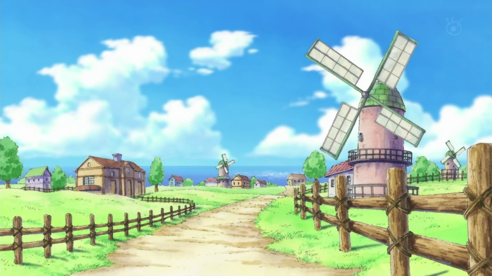

Locations
Learn about the islands and cities we visit. Click “View Details” to see more notes and observations.

Foosha Village
Luffy's hometown, peaceful and lively.

Shells Town
Town under Marine control, introduces key conflicts.

Baratie
Floating restaurant, home of Sanji.